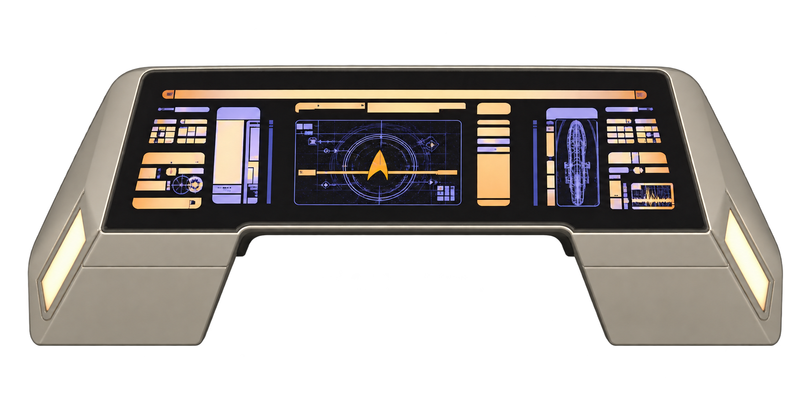
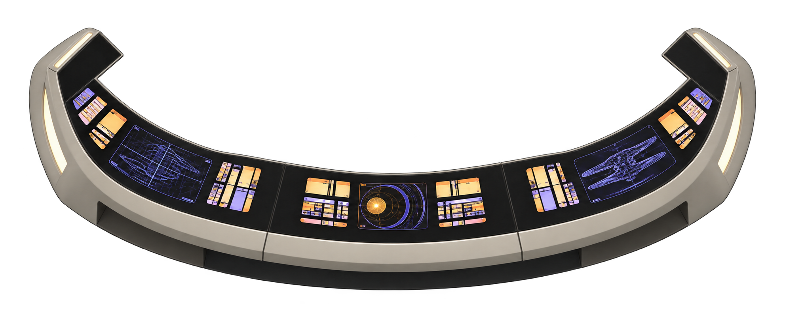
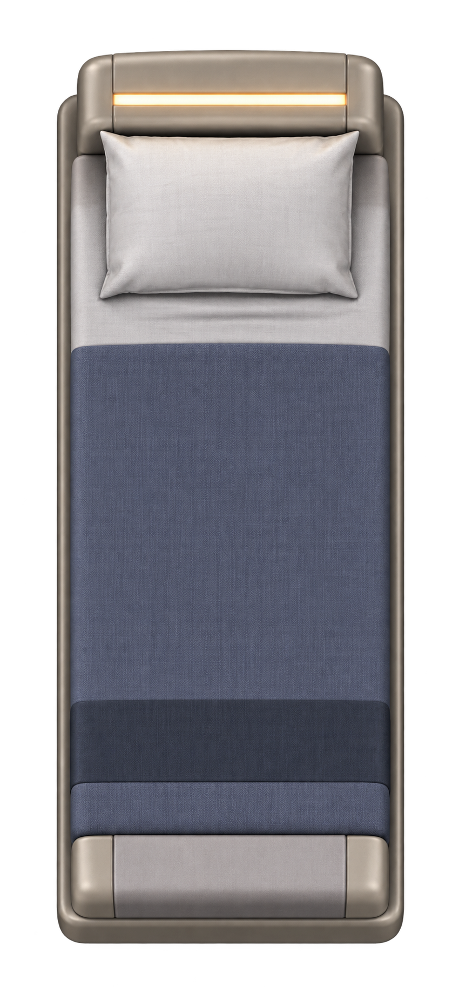
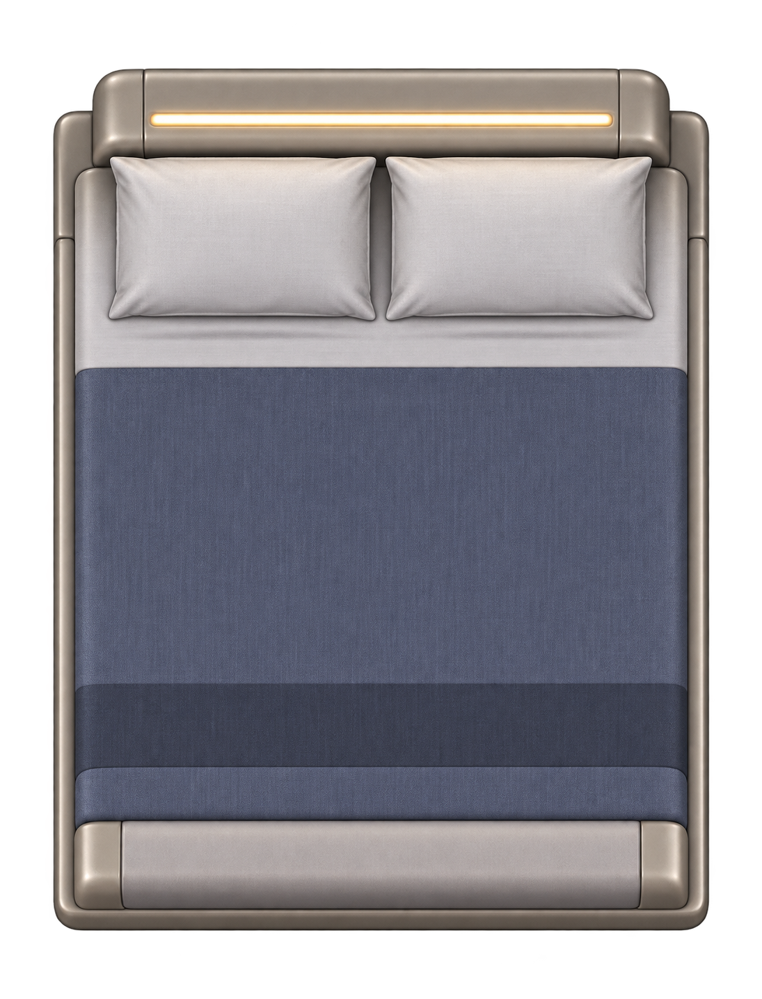
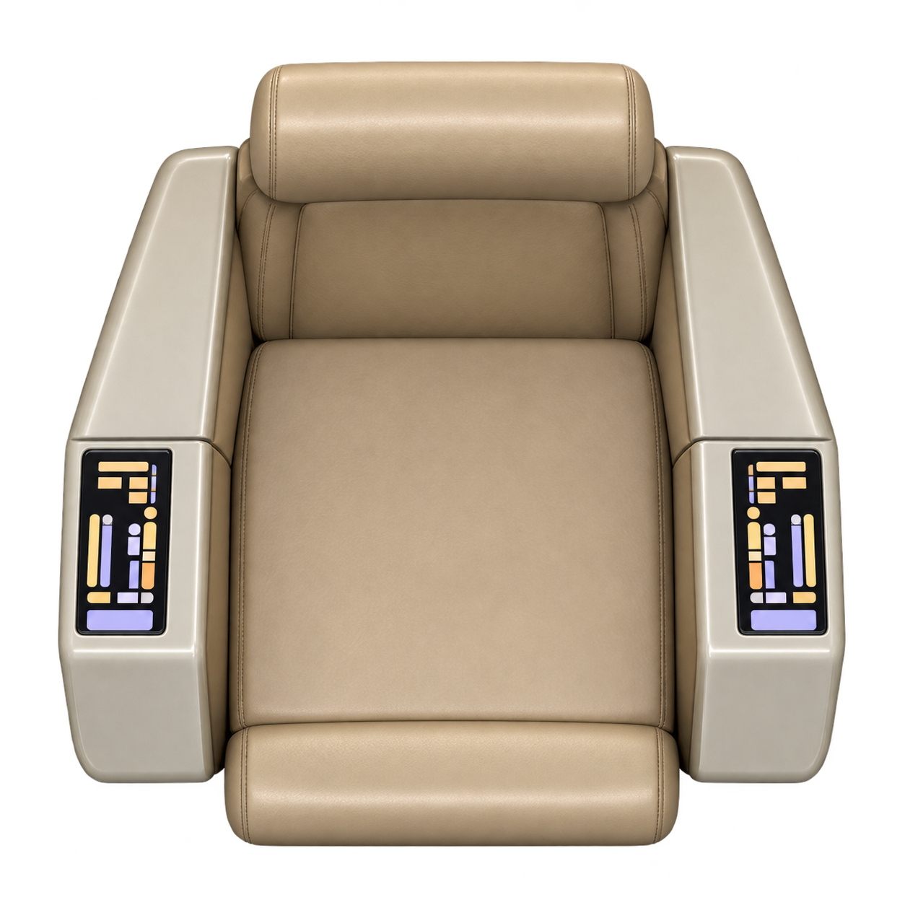
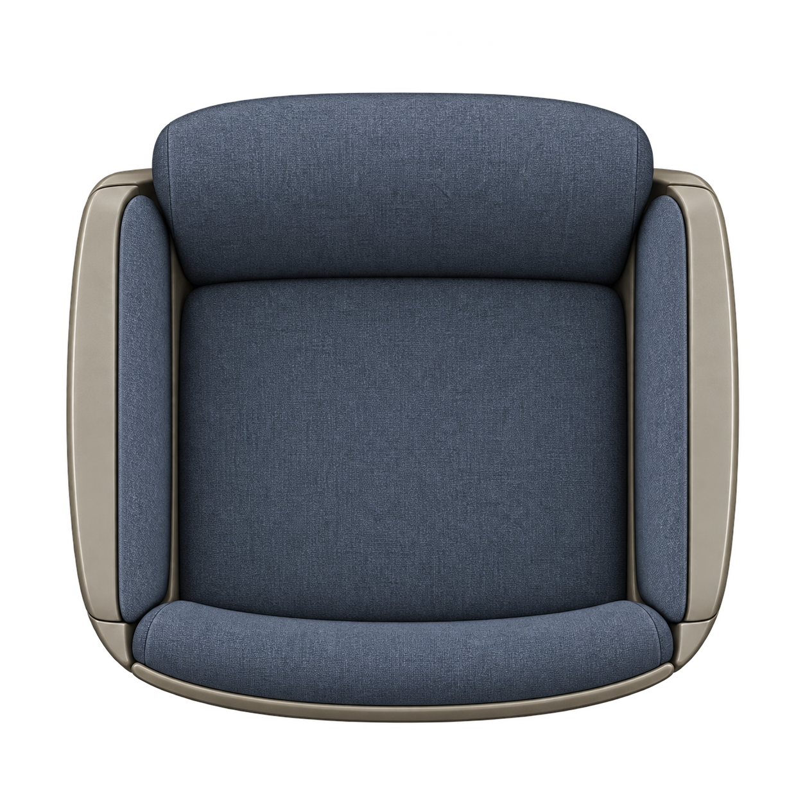
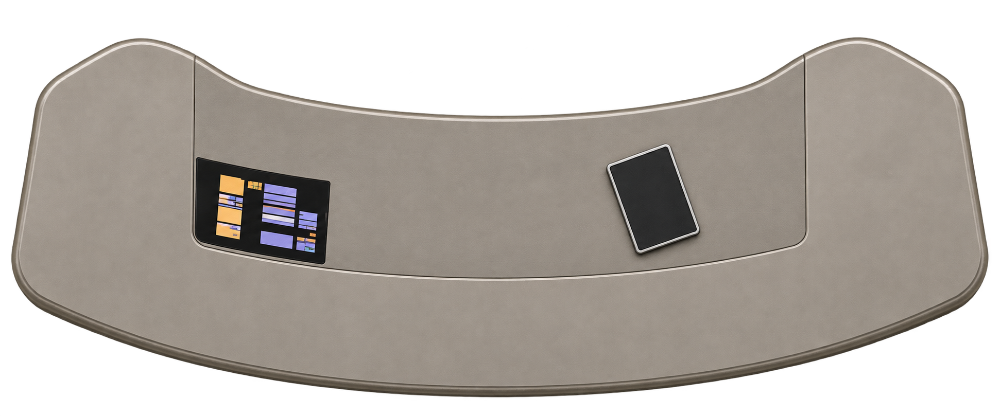
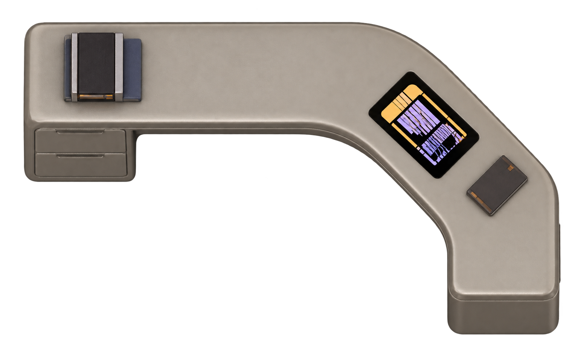

TNG helm console
console-helm.png
Transparent furniture PNG
Ten new pieces derived from the existing TNG room renders. Furniture is transparent; floors repeat. In Generate Interior, select Individual furniture assets and choose a TNG variant under the matching asset slot. Each PNG can also be used as a Foundry tile.

console-helm.png
Transparent furniture PNG

console-tactical.png
Transparent furniture PNG

bed-crew.png
Transparent furniture PNG

bed-officer.png
Transparent furniture PNG

chair-command.png
Transparent furniture PNG

chair-visitor.png
Transparent furniture PNG

desk-ready-room.png
Transparent furniture PNG

desk-quarters.png
Transparent furniture PNG
floor-room-carpet.png
Repeated floor preview
floor-deck-panels.png
Repeated floor preview